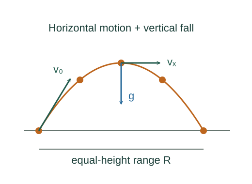

Derive the projectile trajectory
Projectile motion combines constant horizontal velocity with constant vertical acceleration. The curved path comes from eliminating the shared time between those two motions.
What the symbols mean
v₀: launch speed; θ: launch angle above horizontal; g > 0: gravitational acceleration magnitude. Upward is positive y.
When this applies
Negligible air resistance, a uniform downward gravitational field, and a launch with nonzero horizontal velocity.
Developing the argument

Resolve the launch velocity
Gravity acts vertically, so it does not change the horizontal component. Treat each component separately while using the same time.
A closer lookWhy these trigonometric factors? ↗Integrate each acceleration
Horizontal acceleration is zero and vertical acceleration is −g. Apply the one-dimensional constant-acceleration results to each direction.
Eliminate the shared time
Solve the horizontal equation for t and substitute it into the vertical one. The linear term gives the launch slope; the quadratic term bends the trajectory downward.
Derive the equal-height range
Set y = y₀. Exclude the initial root t = 0 and solve for flight time. Substitution into the horizontal displacement yields the range.
A worked example
For v₀ = 20 m/s and θ = 30°, the equal-height flight time is about 2.04 s and the range is 35.3 m using g = 9.81 m/s².
Derivation behind this calculation ↗A point to keep straight
The range formula assumes equal launch and landing heights. At the highest point vᵧ = 0, but acceleration is still −g.
Check the assumptions and derivation ↗